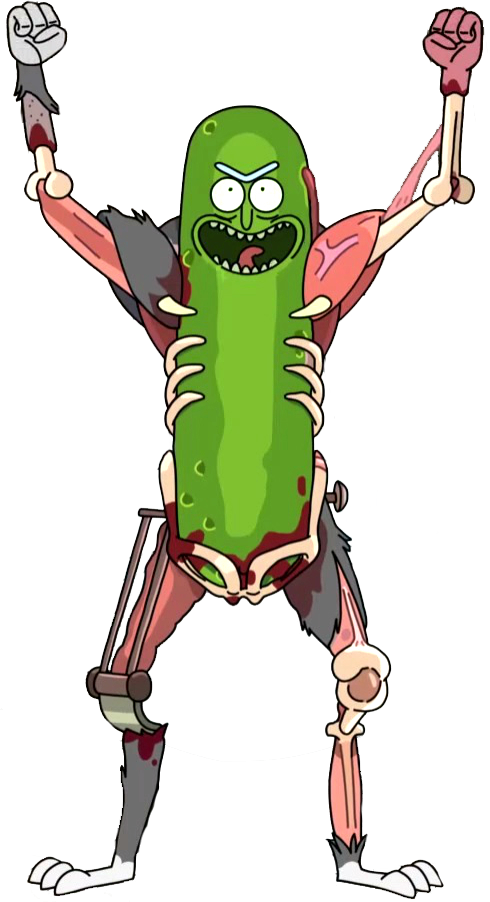

picklerick picklerick picklerick picklerick picklerick picklerick picklerick picklerick
picklerick picklerick picklerick picklerick picklerick picklerick picklerick picklerick
picklerick picklerick picklerick picklerick picklerick picklerick picklerick picklerick picklerick picklerick picklerick picklerick
picklerick picklerick picklerick picklerick picklerick picklerick picklerick picklerick picklerick picklerick picklerick picklerick
picklerick picklerick picklerick picklerick Pickle Rick picklerick picklerick picklerick picklerick
picklerick picklerick picklerick picklerick picklerick picklerick picklerick picklerick picklerick picklerick picklerick
